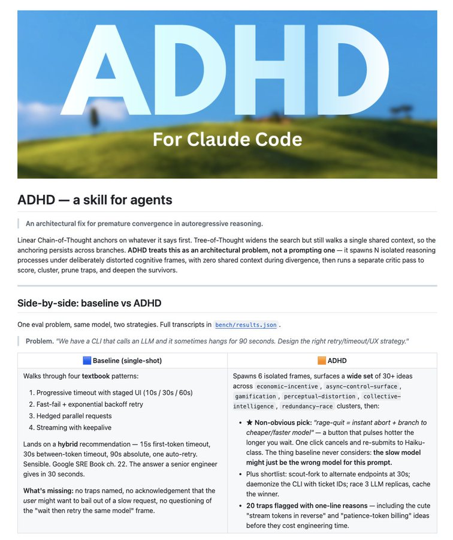
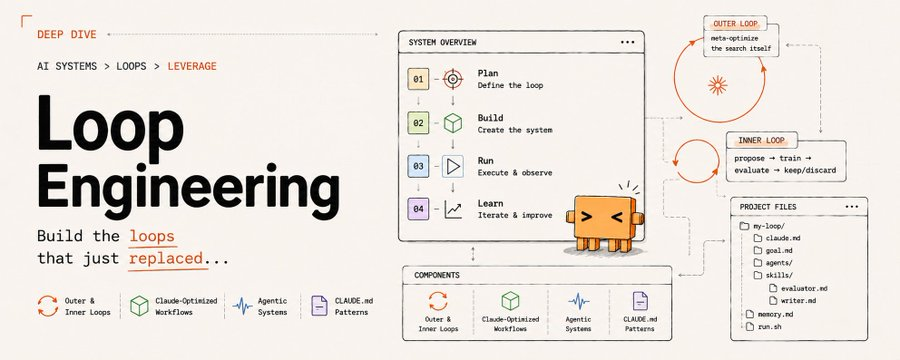

RAG（检索增强生成）在过去两年里几乎成了 AI 问答系统的标配——先搜文档，再拼答案。但微软、斯坦福和 Anthropic 正在悄悄用 Graph Engineering 替代它，而且效果惊人：答案准确率提升 18%，成本降低 85%。
这不是实验室里的论文实验，而是已经落地的工程实践。这篇推文里 Sprytix 用两张图讲清楚了背后的两个核心技术：ADHD（多分支推理架构）和 Loop Engineering（循环工程方法论）。我们来拆解一下。
RAG 的逻辑很简单：用户提问、向量数据库中检索相关片段、把片段塞进 prompt、LLM 生成答案。这套流程的问题是：检索结果的质量决定了答案的上限。如果检索到的文档片段不完整、不相关或互相矛盾，LLM 再聪明也救不回来。
更深层的问题在于：RAG 本质上是一种先搜后拼的范式，它假设答案的信息已经散落在某个文档里，只需要找出来拼在一起。但对于复杂推理问题——比如设计一个 LLM CLI 的重试策略——答案并不存在于任何单一文档中，它需要跨多个知识维度综合推理。
Graph Engineering 的思路完全不同：把知识组织成图结构，让推理在图上游走，而不是在文档碎片中检索。这意味着模型能理解概念之间的关系，而不是被动地拼凑文本片段。
ADHD 是推动 Graph Engineering 落地的关键架构设计。它的全称是 Attention Divergence with Heterogeneous Decoding（异构解码注意力发散），解决的是自回归推理中最棘手的过早收敛问题。
传统思路的问题：线性 Chain-of-Thought 会锚定在最初输出的思路上；Tree-of-Thought 虽然拓宽了搜索，但所有分支共享同一份上下文，锚定效应依然存在。ADHD 的解法是：把这定义为一个架构问题，而非提示词工程问题。
具体做法：生成 N 个完全隔离的推理分支，每个分支在刻意扭曲的认知框架下发散思考，分支之间零共享上下文。然后运行独立的评审流程，对所有分支打分、聚类、剪枝，只保留最优思路。
实测效果：在设计 LLM CLI 重试策略这个测试问题上，基线方案只产出了 4 种教科书级别的常规解法（渐进超时、指数退避、并行请求、流式保活），而 ADHD 生成了 6 个独立的推理框架，覆盖经济激励、异步控制、游戏化、群体智能、冗余竞速等方向，产出了 30 多个创意方案。
其中最有价值的一个发现是：基线完全没意识到——如果模型响应慢，可能模型本身就不适合这个 prompt。ADHD 提出了「愤怒退出」机制：用户点一次按钮就取消当前请求，自动切换到更便宜更快的小模型。这个思路是基线在单一上下文推理中永远想不出来的。

ADHD 解决的是单次推理的质量问题，而 Loop Engineering 解决的是系统如何持续进化的问题。这两者组合在一起，才是完整的 Graph Engineering 工程实践。
Loop Engineering 的核心是双层循环架构：
内层循环（Inner Loop）：高频迭代，负责单次系统优化。流程是：提出改进方案、训练/调整、评估效果、决定保留或丢弃。这就是传统意义上的试错迭代。
外层循环（Outer Loop）：低频元优化，负责调整内层循环本身的规则和方向。它不做单次改动，而是站在更高层问：我们的评估标准对吗？迭代方向对吗？有没有更高效的搜索策略？
这种设计让 AI 系统不再是写好 prompt 然后部署上线再手动调整的线性流程，而是变成一个自我进化的闭环。Claude Code 的 CLAUDE.md 文件规范、agentic systems 的模块化设计，都是这种思想的工程落地。

回到标题的问题：为什么微软、斯坦福和 Anthropic 都在用 Graph Engineering 替代 RAG？
第一，成本。RAG 需要维护庞大的向量数据库，每次检索都涉及 Embedding 计算和 ANN 搜索。Graph Engineering 的图结构一次构建后，推理开销远小于检索开销。18% 的准确率提升加上 85% 的成本降低，这个组合在任何工程决策中都是不可抗拒的。
第二，复杂度。RAG 的架构复杂度随着文档规模增长，会引发分块策略、检索策略、重排序等多个工程难题。Graph Engineering 的知识图是一次性构建的，复杂度增长是线性的。
第三，推理质量。RAG 本质是拼凑，Graph Engineering 本质是理解。当问题需要跨文档、跨领域的综合推理时，图结构天然比碎片化检索更适合。
从 RAG 到 Graph Engineering 的转变，本质上是 AI 系统从信息检索范式走向知识推理范式。RAG 假设答案是拼图，Graph Engineering 假设答案是推理。
这不是一个技术选型的问题，而是一个理念问题：你的 AI 系统是在找答案还是在想答案？ADHD 加上 Loop Engineering 给出的答案是后者——而且已经在大厂的生产环境中证明了可行性。
那些还在犹豫要不要抛弃 RAG 的团队，或许该认真看看这张图了。
参考：https://x.com/Sprytixl/status/2078778799064584535